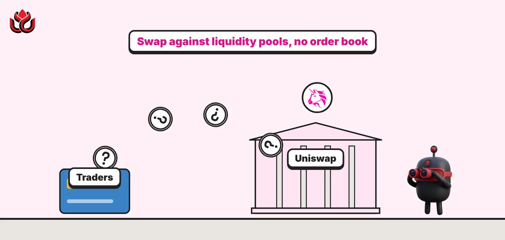
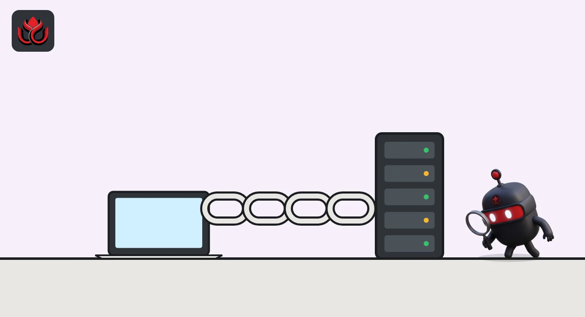
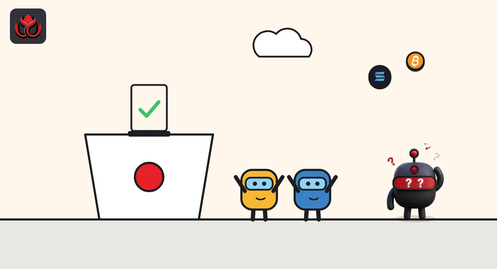

What is Uniswap? How the $5.75B DEX works, from AMM pools to v4 hooks
Uniswap is a decentralized exchange where people swap tokens against pools of liquidity instead of an order book. DefiLlama counted about $5.75 billion locked in it on November 2, 2026, and its newest version, v4, lets developers attach custom code called hooks to each pool.

Key points
- Uniswap is an automated market maker: you trade against pools funded by liquidity providers, who earn swap fees.
- v1 (2018) and v2 (2020) used a constant-product formula. v3 (2021) added concentrated liquidity.
- v4 holds every pool in one contract, settles only net balances, supports native ETH and adds hooks.
- As of November 2, 2026, DefiLlama counted about $5.75 billion locked in Uniswap.
What DeepSea's data shows
DeepSea's UNI page showed the token at $7.22 on November 2, with a market cap of $4.49 billion. UNI was up 59.9% over 30 days.
Supply is concentrated. The largest holder on DeepSea's list has 26.23% of UNI, and a burn address holds 11.25%. Over seven days, DeepSea shows whales as net sellers of about $22.56 million of UNI.
Data: DeepSea (desea.io), checked November 2, 2026, 7:58 a.m. ET.
What is Uniswap?
Uniswap is a decentralized exchange (DEX): smart contracts that let anyone swap one token for another from their own wallet. There is no order book and no company holding your coins. You trade against a pool of two tokens, and the pool's math sets the price.
The people who fund those pools are liquidity providers (LPs). They deposit both tokens and earn a share of the fee on every swap. As of November 2, 2026, DefiLlama counted about $5.75 billion locked in Uniswap.
How does an automated market maker work?
The early versions used a constant-product formula. The pool keeps the product of its two token balances fixed, so as traders buy one token, the pool holds less of it and its price rises. The v4 whitepaper describes v1 (2018) as handling swaps between ERC-20 tokens and ETH, and v2 (2020) as adding direct pairs between two ERC-20 tokens, both on this model.
v3 (2021) added concentrated liquidity. LPs can place their money in a chosen price range instead of across every possible price. Inside that range their money works harder and earns more fees. Outside it, it earns nothing. v3 also brought several fee tiers.
LPs face a cost known as impermanent loss. When prices move, the pool sells the rising token and buys the falling one, so an LP can end up with less value than if they had simply held both tokens.
A quick illustration of concentrated liquidity: an LP who expects ETH to trade between $3,000 and $4,000 can put all their liquidity in that band. While ETH stays inside it, that LP collects a bigger share of fees than someone spread across every price. If ETH climbs to $4,500, the pool has sold all of that LP's ETH for the other token on the way up, and the position stops earning until the price comes back into range or the LP moves it.

How do you swap on Uniswap?
A swap needs a self-custody wallet holding the token you want to sell, plus the chain's native coin to pay network fees. You pick the two tokens and the amount, and the interface shows a quote, the expected price impact and a slippage limit: the worst price you are willing to accept. If the price moves past that limit before your transaction lands, it fails instead of filling badly.
Behind the scenes, Uniswap's developer docs recommend the Universal Router as the entry point for swaps. It can route one trade through v2, v3 and v4 pools in a single transaction. Permit2, another Uniswap contract, handles token approvals by signature with time limits, so apps do not need open-ended permission to move your tokens.
Your trade pays two costs. The pool fee goes to the liquidity providers (and, where the protocol fee is on, partly to the protocol). The network fee goes to the blockchain. On busy days the network fee on Ethereum can be larger than the pool fee for small trades, which is one reason Uniswap runs on many chains.
What is new in Uniswap v4?
- One contract for all pools: in v3 a factory deploys a new contract for every pool. In v4 one contract, the PoolManager, holds all pools. Uniswap's June 2023 announcement estimated this cuts the gas cost of creating a pool by 99%.
- Flash accounting: one transaction can do several swaps or liquidity moves and settle only the net balances at the end, using Ethereum's transient storage (EIP-1153).
- Native ETH: pools can hold ETH directly, without wrapping it first.
- Fees: v3's limit of four fee tiers is gone, per Uniswap's help center, and a pool can be created with a dynamic fee that a hook manages.
- Subscribers: LP positions can notify another contract when they change, so they can be staked without handing over the position NFT, per the developer docs.

What are Uniswap v4 hooks?
Hooks are the headline feature. A hook is an outside smart contract attached to a pool when the pool is created. It can run its own logic before or after key moments: pool creation, adding or removing liquidity, swaps and donations. The whitepaper counts ten such callbacks. Each pool can have only one hook, but one hook can serve many pools, per Uniswap's docs.
Uniswap's own examples include:
- spreading a large order over time (a time-weighted average market maker, or TWAMM)
- fees that change with volatility
- onchain limit orders
- lending out liquidity that is out of range
- custom price oracles
- reinvesting LP fees automatically
Hooks can even do their own accounting and skip the standard concentrated liquidity math, the whitepaper says. That turns v4 into a base for building new kinds of exchanges on shared liquidity.
Who runs Uniswap, and what does UNI do?
Uniswap's help center describes v4 as non-custodial, non-upgradeable and permissionless: no one can change the core contracts or stop people from using them. Uniswap Labs builds the main app and developer tools. Governance can switch on a protocol fee taken from a pool's swap fees, up to a cap set in the code, and unlike v3 it does not control fee tiers, the whitepaper says.
That fee is on. According to Uniswap's developer docs, fees from all versions flow through fee adapter contracts into a TokenJar on each chain, and a "Firepit" releaser burns UNI in exchange for the collected assets. In October, Uniswap opened that conversion tool to other apps, as we covered in our story on TJAR.
As of November 2, 2026, UNI traded at about $7.22 with a market cap of about $4.51 billion (about 624.1 million UNI in circulation), per CoinMarketCap.
What are the risks of using Uniswap?
- Price impact: large trades in thin pools move the price against you.
- Impermanent loss: LPs can lose value compared with holding when prices move.
- Out-of-range positions: in v3 and v4, concentrated liquidity earns nothing once the price leaves your range.
- Hook risk: a hook is extra code that runs during swaps and liquidity changes. A buggy or malicious hook could change fees or mishandle funds in its pool, so it needs the same scrutiny as any other contract.
- Fake tokens: anyone can create a pool, including for copies of real tokens.
- Front-running: bots can see public swaps and trade around them.
LC Insight analysis
This section is our reading of the facts above, not a statement of fact.
- Hooks make v4 less a single exchange and more a toolkit. The upside is new market designs on shared liquidity; the cost is that users must now ask which hook a pool runs, not just which tokens it holds.
- The fee switch changes what UNI is. With fees converted into UNI burns, the token's case rests on trading volume across chains, which can fall as fast as it rises.
- For liquidity providers, concentrated liquidity is a trade-off, not free money. A tight range earns more while the price stays inside and nothing once it leaves.
What's next
- Adoption of v4 hooks, and any exploit tied to a hook
- The pace of UNI burns as fee conversion opens to other apps
- Which chains get v4 fee collection next
Frequently asked questions
Is Uniswap a company or a protocol?
Both names are used. The Uniswap protocol is a set of non-upgradeable smart contracts. Uniswap Labs is a company that builds apps and tools on top of it.
How many hooks can a Uniswap v4 pool have?
One. The hook is chosen when the pool is created, though a single hook contract can serve many pools.
When was Uniswap v4 designed?
Uniswap Labs published its vision for v4 on June 13, 2023, and the v4 core whitepaper is dated August 2024.
Does Uniswap burn UNI?
Yes. Per Uniswap's developer docs, protocol fees collect in a TokenJar on each chain, and the Firepit releaser burns UNI in exchange for those assets.
Disclaimer. This article is based on public information and the sources listed below as of the update time shown. It is for information only and is not investment, legal or tax advice. Figures may change as companies and authorities publish new data.